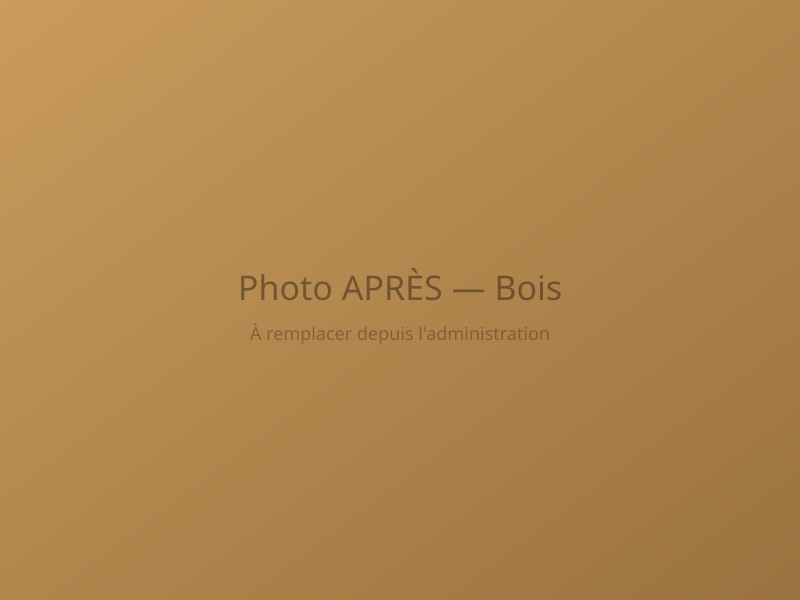
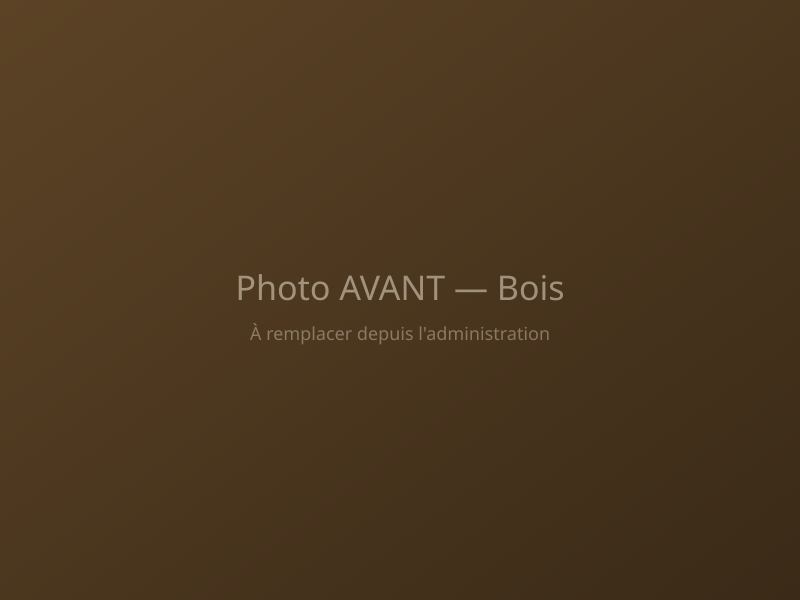
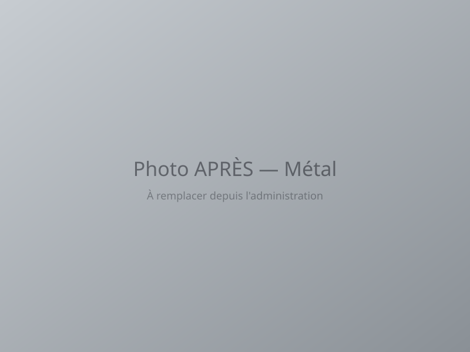
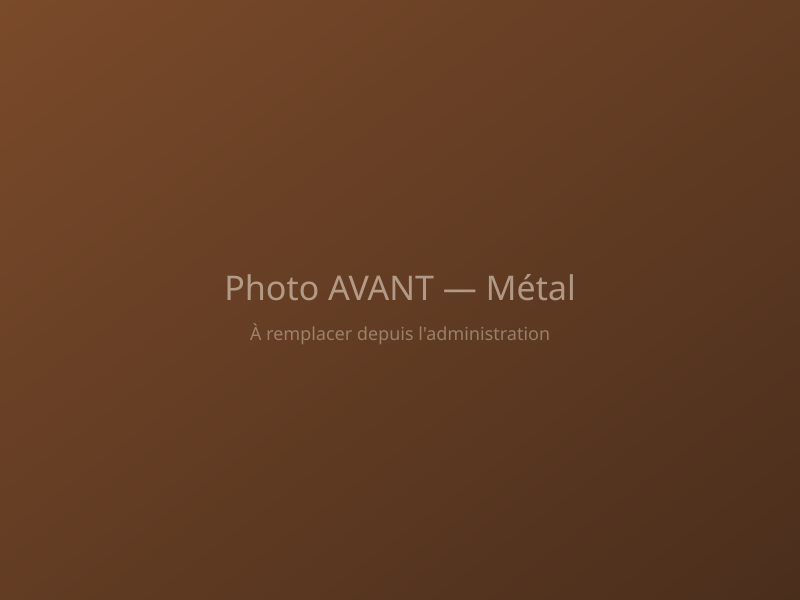
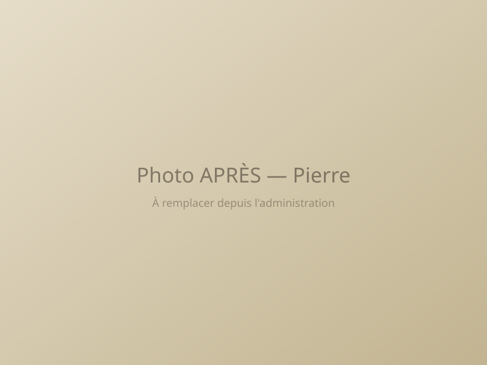
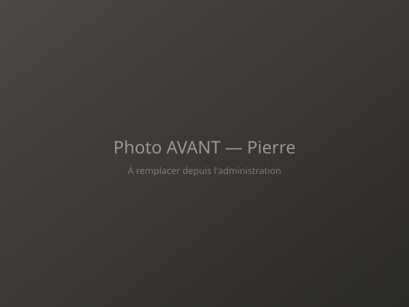
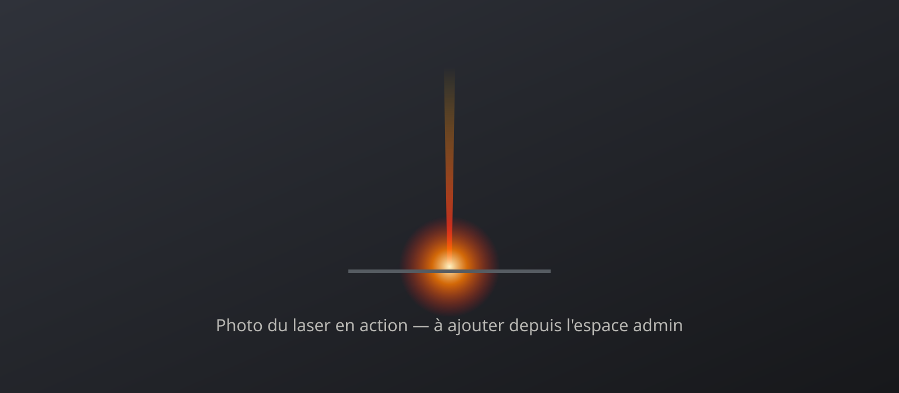
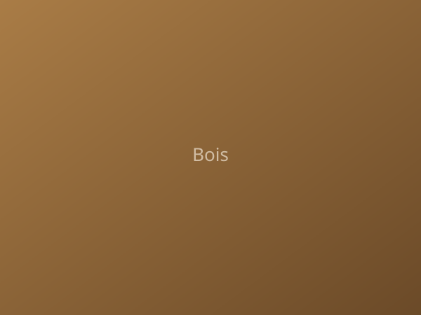
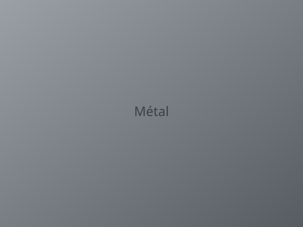
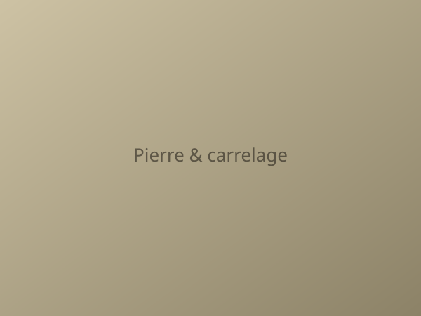

Laser Tout Décapage redonne vie à vos supports par décapage laser : 100 % écologique, rapide, et sans risque pour le matériau d'origine.
Faites glisser le curseur pour révéler la surface avant intervention.
Meubles, poutres, portails : le bois retrouve son grain naturel.


Rouille et peinture disparaissent sans attaquer le métal.


Façades, monuments, carrelage encrassé : la pierre respire à nouveau.


Aucun rejet toxique, aucun résidu chimique après intervention.
Un procédé entièrement à sec, sans solvant ni détergent.
Le support n'est jamais agressé ni éraflé.
Un ciblage laser précis, sans usure du matériau d'origine.
Un faisceau de lumière concentrée vise uniquement la couche à retirer : rouille, peinture, suie ou dépôt.
La chaleur du laser fait éclater la crasse en micro-particules, sans contact ni frottement.
Bois, métal ou pierre retrouvent leur état naturel, sans usure ni trace.

Le laser est un outil puissant : il demande un vrai savoir-faire. Notre équipe a suivi la formation Responsable Sécurité Laser – Niveau 3, le plus haut niveau de formation pour encadrer l'utilisation des lasers professionnels.



Un meuble de famille, un portail, une façade à sauver ? On intervient chez vous, avec soin — sans poncer, sans produit.
Nettoyage technique, décapage de pièces, entretien régulier : nos interventions s'adaptent à votre activité.
Un entretien respectueux du patrimoine, sans agresser les matériaux d'origine.
Décapage laser mobile : nous nous déplaçons chez vous, sur chantier ou dans vos locaux, dans le Nord, l'Eure-et-Loir et l'Ouest parisien.
Nord (59) et Pas-de-Calais (62)
Lille, Roubaix, Tourcoing, Villeneuve-d'Ascq, Marcq-en-Barœul, Douai, Valenciennes, Lens, Arras, Dunkerque
Tout le département 28 et la région Centre-Val de Loire
Chartres, Dreux, Châteaudun, Nogent-le-Rotrou, Lucé, Vernouillet, Mainvilliers, Épernon, Maintenon, Bonneval, Orléans, Tours, Blois
Yvelines (78) et Hauts-de-Seine (92)
Versailles, Saint-Germain-en-Laye, Rambouillet, Saint-Quentin-en-Yvelines, Poissy, Mantes-la-Jolie, Plaisir, Le Chesnay, Sartrouville, Rueil-Malmaison, Nanterre, Boulogne-Billancourt
Le décapage laser retire la rouille, la peinture, la suie ou les dépôts d'une surface à l'aide d'un faisceau de lumière concentrée. La couche à enlever se vaporise en micro-particules, sans contact ni frottement, et le support garde son aspect d'origine.
Oui. Laser Tout Décapage est une entreprise de décapage laser mobile qui intervient en Eure-et-Loir (28) — Chartres, Dreux, Châteaudun, Nogent-le-Rotrou, Lucé, Épernon — et dans le reste du Centre-Val de Loire, dans le Nord (59) et le Pas-de-Calais (62) — Lille, Roubaix, Tourcoing, Douai, Valenciennes, Arras —, ainsi que dans les Yvelines (78) et l'Ouest parisien — Versailles, Saint-Germain-en-Laye, Rambouillet, Poissy, Rueil-Malmaison.
Nous nous déplaçons avec notre équipement : chez vous, sur votre chantier ou dans vos locaux. Inutile de démonter un portail, des volets ou une poutre.
Le prix dépend de la surface à traiter, du type de support, de l'épaisseur de la couche à retirer et de l'accès au chantier. Chaque intervention fait l'objet d'un devis gratuit : décrivez votre projet via le formulaire ou appelez le 06 09 10 63 15.
Non. Le faisceau cible uniquement la couche à retirer. Contrairement au ponçage ou au sablage, il n'use pas le matériau : le bois garde son grain, le métal n'est pas attaqué et la pierre n'est pas érodée.
Oui, entre de bonnes mains. Notre équipe est formée Responsable Sécurité Laser (niveau 3), la formation de référence pour encadrer l'utilisation des lasers professionnels. Chaque intervention est préparée et réalisée par un professionnel qualifié.
Le bois (meubles anciens, poutres, charpentes, escaliers, portails, volets), le métal (rouille sur portails et ferronneries, pièces industrielles, outillage, mobilier métallique) et la pierre (murs en pierre naturelle, façades, monuments, carrelage encrassé, suie après incendie).
Oui. Le procédé est entièrement à sec : sans eau, sans produit chimique, sans solvant et sans sable. Il ne laisse aucun résidu toxique après l'intervention.
Oui. Nous intervenons pour les particuliers, les professionnels (bâtiment, restauration, automobile, aéronautique, métallurgie, métiers de bouche) et les collectivités (musées, monuments historiques, bâtiments publics et façades).
Décrivez votre projet, nous revenons vers vous rapidement.